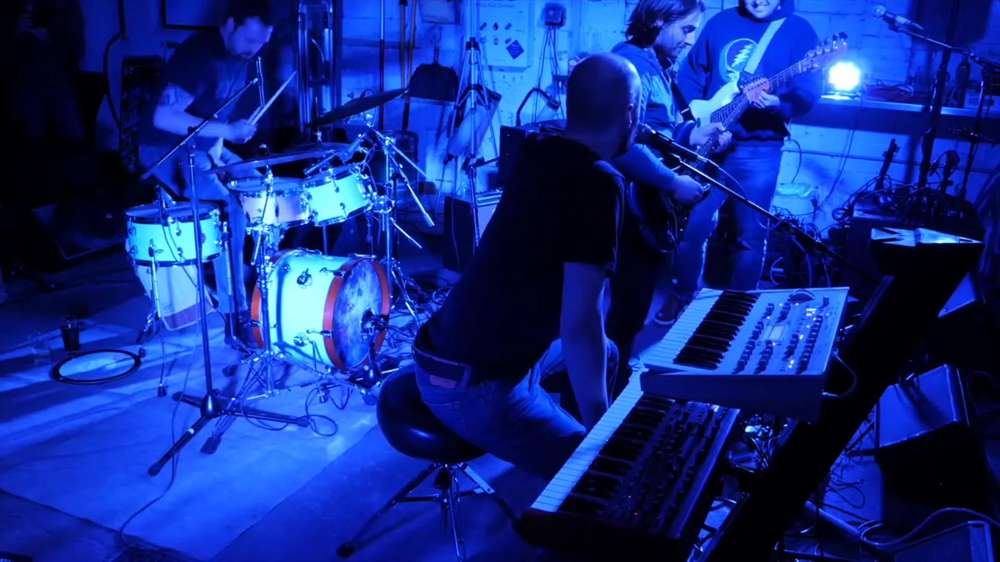

THE BAND
Funkadelic Astronaut
New Jersey · Future Rock
Three friends blending funk and electronics with keyboards, drums, bass and vocals.
Founded in New Jersey in 2012 by Ryan Gavin and Kevin O’Neill, with Sam Luba joining in 2017. Together, they’ve been bringing that sound to stages across the Northeast.
Upcoming shows
| Date | Venue / City | Tickets |
|---|---|---|
The next landing is on the horizon. No upcoming shows announced. Check back for dates. | ||